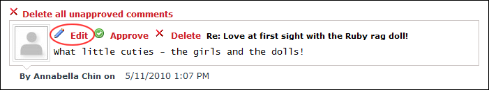
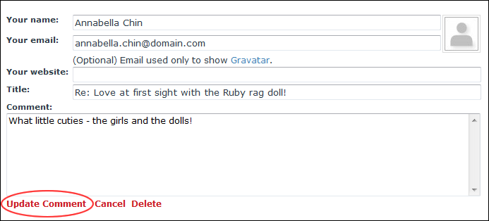

Editing a Blog Comment
How to edit a comment associated with a blog entry on the Blog module. This task can be performed by bloggers on their own blog or by the Administrators on all blogs.
- Locate the required blog entry. See "Viewing Blog Entries for a Month", See "Viewing Blog Entries for a Single Date", or See "Viewing Recent Entries for a Single Blog".
- Click the
 Comments (1) link.
Comments (1) link.

- Click the Edit
 button or the Edit link beside the comment. The comment is now displayed in the Comment text box below.
button or the Edit link beside the comment. The comment is now displayed in the Comment text box below.
- In the Comment text box, edit the comment.

- Click the Update Comment link.